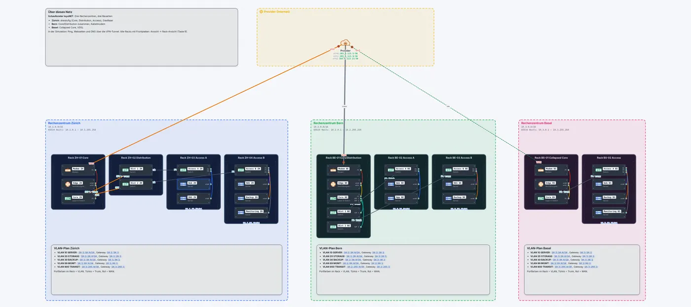
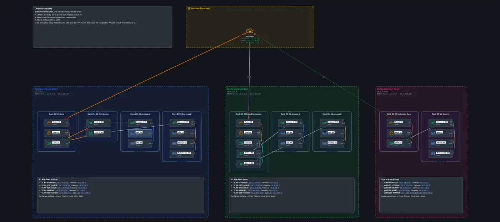

Bereiche mit Netz und VLAN, Notizen, Racks, Stockwerke, Snapshots und Richtpreise: wie ein Netzplan entsteht, den man auch abgeben kann.
Warum Dokumentation dazugehört
Ein Netz, das niemand versteht, lässt sich nicht betreiben. In leyoNET ist die Dokumentation Teil des Netzes: Bereiche, Farben und Beschreibungen liegen in derselben Datei wie die Konfiguration und lassen sich in Übungen und Prüfungen bewerten.
Die Werkzeuge
Bereiche: farbige Flächen mit Titel, Netzadresse (leyoNET berechnet Maske, Hostbereich und Broadcast), VLAN und Notiz. Ein Bereich mit VLAN färbt die Switch-Ports dieses VLANs ein.
Notizen: Textfelder mit Titel, Absätzen, Aufzählungen und fett, z.B. für einen VLAN-Plan.
Racks: 19-Zoll-Schränke auf der Zeichenfläche. Geräte hineinziehen, sie werden als Einschübe gestapelt. Ansicht → Rack-Ansicht (Taste R) zeigt alle Racks mit Frontplatten, Link-LEDs, Farbtags und Patchkabeln.
Ports: Jeder Anschluss hat eine Farbe und eine Beschreibung («Uplink Core»), wie die Etiketten im echten Rack.
Stockwerke: Geräte und Bereiche liegen auf Stockwerken; WLAN-Signale werden über Stockwerke schwächer.
Snapshots: benannte Zwischenstände, automatisch vor jedem Start der Simulation.
Kosten: Richtpreise für alle Geräte und Kabel, Total in CHF; Übungen können ein Budget verlangen.
Ein gutes Beispiel
Das Schaufenster zeigt einen vollständig dokumentierten Rechenzentren-Verbund: Je Standort ein Bereich mit Netz, Racks nach Schicht (Core, Distribution, Access), Ports in den VLAN-Farben, Türkis für Trunks und ein VLAN-Plan als Notiz. Genau so sollen Lernende ihre eigenen Netze abgeben.
So geht es in leyoNET
Derselbe Text wie in der Hilfe der App (Taste F1).
Bereiche
Bereiche dokumentieren das Netz: Subnetze, VLANs, Räume, Zonen und öffentliche Netze. Mit B zeichnen oder aus dem Shop ziehen. Ein VLAN-Bereich übernimmt die Farbe des VLANs. Beim Ziehen bewegt sich nur der Bereich; Geräte darin kommen mit, wenn sie mitgewählt sind. Mehrere Bereiche und Geräte wählt man mit einem Rahmen (Auswählen, verschieben, kopieren).
Textfeld: Im Shop unter Bereiche → Textfeld gibt es ein Feld für freien Text: Infos, Auftrag, Legende. Leerzeile = neuer Absatz, «- » = Liste, fett, Befehl; IP-Adressen werden hervorgehoben. Der Text steht direkt auf der Fläche, die Ecke unten rechts zieht das Feld grösser.
Racks
Switches, Router, Rack-Server und Modems lassen sich in ein Rack einbauen. R zeigt die Frontansicht mit allen Ports; im Entwurf steckst du dort direkt um. Patchkabel zwischen Geräten im selben Rack erscheinen als farbige Kabel über der Front; Kabel zu Geräten ausserhalb stehen unter den Ports. Überfahren eines Ports hebt sein Kabel hervor. Auf der Zeichenfläche tragen eingebaute Geräte ein Etikett mit dem Namen; Kabel zwischen ihnen laufen als Patchkabel rechts am Rack entlang, mit Port und LED am Ausgang.
Stockwerke
Grosse Netze lassen sich auf Stockwerke verteilen. Kabel zwischen Stockwerken erscheinen als Steigleitung.
Snapshots
Ein Snapshot hält einen Zwischenstand fest. Automatisch entsteht einer beim Start der Simulation und alle fünf Minuten, solange sich etwas ändert. Wiederherstellen lässt sich jeder im Entwurf (rückgängig mit Strg+Z). Snapshots werden mit dem Projekt gespeichert.
Kosten
Jedes Gerät, Kabel und Modul hat einen Richtpreis. Ansicht → Kosten zeigt die Liste und das Total in CHF, EUR oder USD. Aufgaben können ein Budget verlangen – so lässt sich üben, eine Offerte zu planen.
Die Preise sind Richtwerte ohne MwSt.
Beispiel ansehen


Rechenzentren-Verbund
Drei Rechenzentren in drei Bauarten: Zürich dreistufig (Core, Distribution, Access), Bern mit zusammengelegtem Core und Distribution, Basel als Collapsed Core. Alle Geräte sind in Racks eingebaut, die Ports tragen die Farbe ihres VLANs. Angeschlossen sind die Standorte über Glasfaser, Kabelmodem und VDSL, verbunden mit IPsec-Tunneln.
Ein Server in Zürich pingt das NAS in Bern durch den VPN-Tunnel, das Monitoring ruft die Webseite in Basel über ihren DNS-Namen ab, Bern fragt den DNS-Server in Zürich, und Basel pingt das Monitoring in Zürich.
«Live ansehen» öffnet das Netz in leyoNET, die Simulation läuft in einer Schleife. In der App findest du es unter Datei → Demo-Netze, mit Führung Schritt für Schritt.
In leyoNET unter Werkzeuge → Aufgaben-Katalog. Jede Übung prüft sich selbst.
Weiterlesen
Netzwerkdesign: Core, Distribution, AccessWarum grosse Netze in Schichten gebaut werden, wann ein Collapsed Core genügt und wie ein Rechenzentrum mit Leaf-Spine aussieht.
VLAN und TrunksEin Switch, mehrere getrennte Netze: Access-Ports, Trunks mit 802.1Q-Tag, natives VLAN und Routing zwischen VLANs.